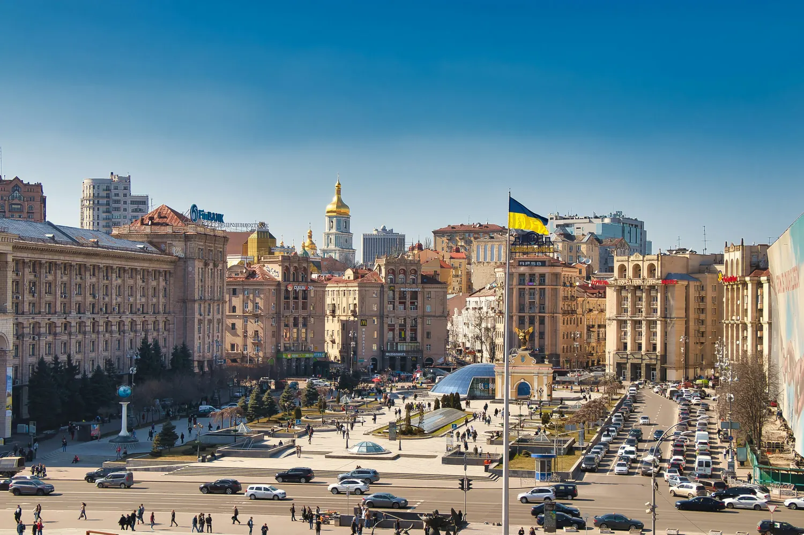

Місто в русі: як зробити громадський транспорт зручнішим
Зручний маршрут — це більше, ніж шлях від однієї зупинки до іншої. Це зрозуміла навігація, доступність і відчуття, що місто створене для людей.

РІА Новини Україна. Цей демонстраційний матеріал показує структуру новинної статті: від короткого вступу та головного фото до тексту, підзаголовків, цитати й матеріалів за темою. Він не повідомляє про конкретне рішення міської влади.
Коли ми говоримо про зручний транспорт, важливо дивитися на весь шлях пасажира. Чи легко знайти зупинку? Чи зрозуміло, куди прямує маршрут? Чи можна без зайвих бар'єрів змінити один вид транспорту на інший? Саме з таких дрібниць і складається щоденний досвід.
Маршрут починається до посадки
Комфортна поїздка починається ще вдома: з чіткої інформації про час, зручного пішохідного переходу та зрозумілих позначень на вулиці. У добре спроєктованому середовищі ці речі працюють разом — і не вимагають від людини додаткових зусиль.
«Найкраща система та, яку легко зрозуміти з першого погляду — незалежно від того, як часто ви користуєтеся маршрутом».
Не менш важлива доступність. Ширина проходу, помітність покажчиків, місця для відпочинку і можливість отримати інформацію різними способами роблять простір придатнішим для багатьох людей. Це корисно не лише пасажирам, а й місту загалом.
Місто як єдина система
Зупинки, вулиці, переходи, веломаршрути та громадські простори не існують окремо. Якщо розглядати їх як частини однієї системи, легше знаходити рішення, що справді спрощують пересування.
Ця сторінка є прикладом дизайну для майбутнього новинного сайту. Після встановлення теми WordPress заголовок, дата, автор, рубрика, фото і текст автоматично братимуться з реальної публікації редакції.
Коментарі (0)
Демонстрація: коментарі зберігаються тільки в цьому браузері й не видно іншим відвідувачам. На WordPress-сайті їх опрацьовує редакція.
Коментарів поки немає — розпочніть обговорення.